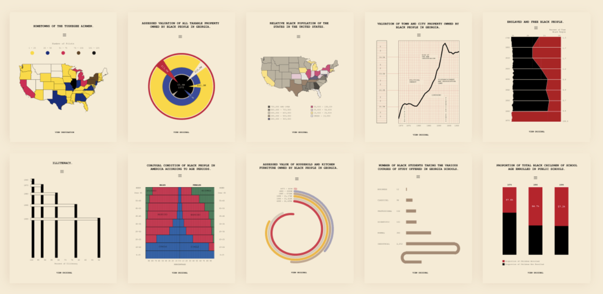
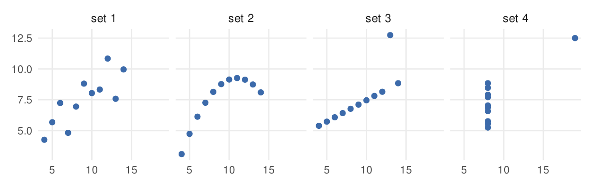
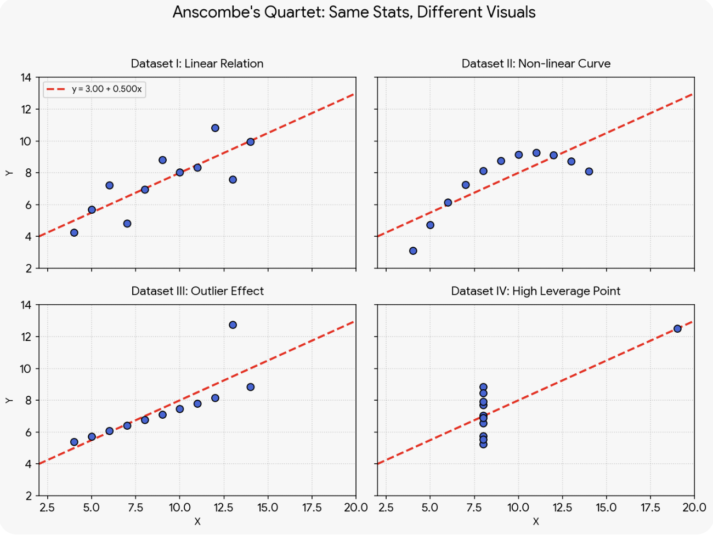
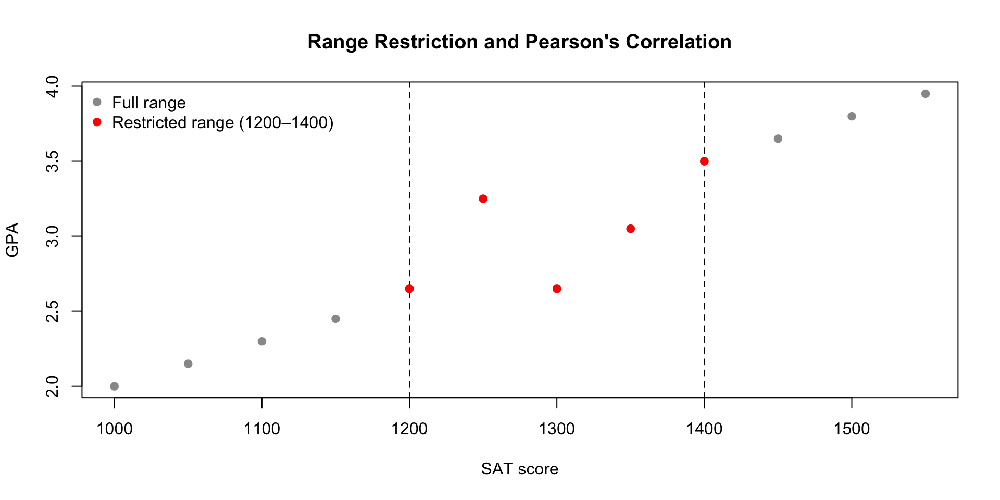
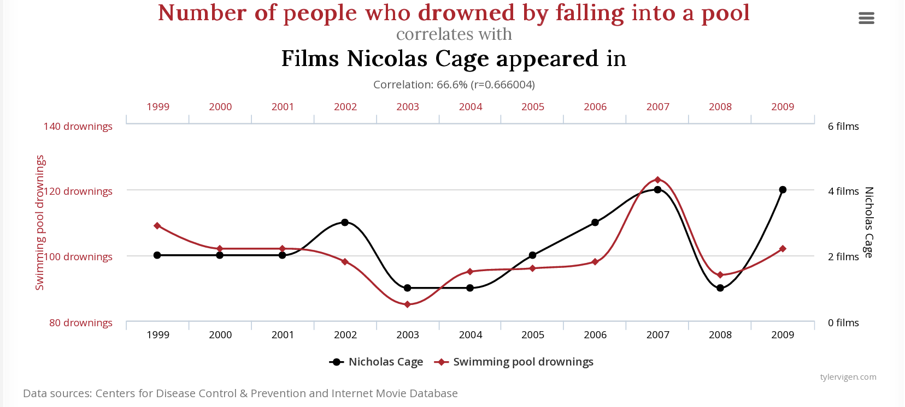
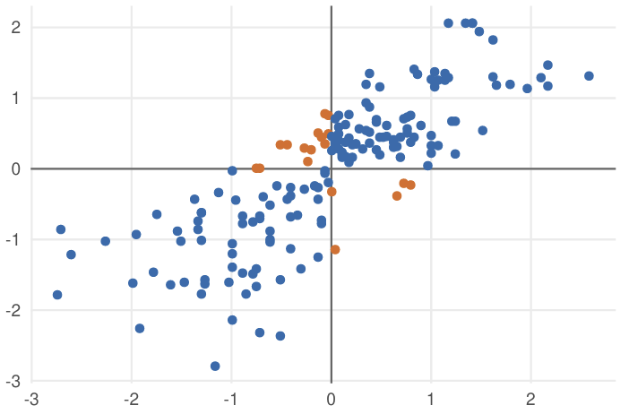
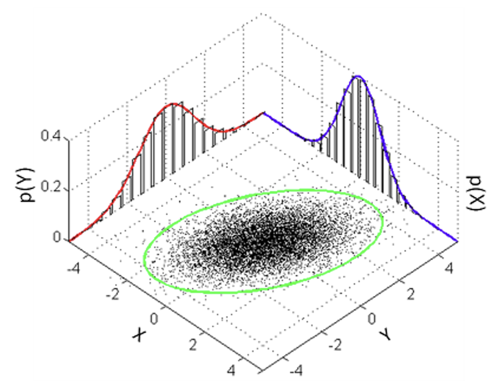

# A tibble: 5 × 4
E1 px1 py1 pz1
<dbl> <dbl> <dbl> <dbl>
1 10.2 0.476 -8.52 5.52
2 15.9 15.1 -1.67 -4.75
3 21.8 -6.22 11.1 17.7
4 19.5 2.76 -5.58 -18.5
5 8.10 4.61 -1.84 6.392026-09-30
Advanced Correlation Analysis
Choosing the right associations

W.E.B. Du Bois Portrait Gallery:
Visualizing Black America
By the end of this lecture, you should be able to:
Note
Big idea: there is not one universally appropriate “correlation.” The statistic should match the variables and the relationship you are trying to describe.
A correlation is a standardized summary of association. For two variables, a correlation summarizes:
A correlation does not by itself tell us:
Before calculating a correlation, look at the data. CERN particle data obtained via open source data repository. Data consist of the total relativistic energy and momentum components along \(3\) orthogonal axes of muons, a subatomic particle that is similar to an electron but is about 207 times more massive.
We want to understand whether energy and momentum are associated.
Start by reading some data.
E1 px1 py1 pz1
0 10.1623 0.4763 -8.5164 5.5231
1 15.8799 15.0618 -1.6658 -4.7464
2 21.8279 -6.2214 11.0845 17.7447
3 19.4923 2.7612 -5.5769 -18.4719
4 8.0972 4.6127 -1.8389 6.3949Do not let the correlation coefficient replace the plot.
The plot tells you whether the numerical summary is an adequate description of the relationship.
Specifically, we wish to ask:
For particles with very little mass, can we predict their energy given momentum alone?
The population parameter is:
\[ \rho = \text{population Pearson correlation} \]
and the observed sample statistic is:
\[ r = \text{sample Pearson correlation}. \]
Pearson’s \(r\) measures how strongly the observations follow a linear pattern. In other words, magnitude of \(r\) tells how close the points are to a straight line and the sign tells us about the direction of the linear trend.
On top of estimating this if you were to ask how significant is this correlation, your standard two-sided test would look like:
\[ H_0: \rho = 0 \]
\[ H_A: \rho \neq 0 \]
Pearson’s \(r\)
Calculate the linear association and run an inferential test to validate the statistical significance of the observed association.
Exploratory: \(r\) summarizes the association in the observed sample.
Inferential: a correlation test asks how unusual the observed \(r\) would be under a null model such as \(H_0:\rho=0\).
Takeaway
Pearson’s correlation between energy and the \(x\) component of momentum is essentially zero in magnitude and not statistically significant.
This does not imply that energy and momentum are unrelated. In fact it makes sense given the relationship between relativistic energy and total momentum is non-linear (quadratic) to begin with while Pearson’s \(r\) measures linear trend.
\[ E^2 = p^2c^2+(mc^2)^2; \qquad p^2 = p_x^2+p_y^2+p_z^2 \]
Correlation is not a complete description

Guess the \(r\) value
You have four datasets, each containing samples measuring two variables \(X\) and \(Y\). You are required to guess the value of the Pearson’s \(r\) that best captures the relationship between the two variables in each case.
Fill in your responses in this form
Remember \(r\) is a value between \(1\) and \(-1\) where positive values indicate an association where both variables grow and shrink together. Values close to \(0\) indicate no meaningful relationship.
Created by statistician Francis Anscombe in 1973, the quartet consists of four distinct datasets that share identical summary statistics, including the correlation coefficient \(r \approx 0.82\).
This is a cautionary tale that summary statistics do not tell the whole story because the scatterplots show four very different relationships.

Remember
Pearson’s \(r\) summarizes linear association directly from data. But nothing about it tells us whether a linear model is actually appropriate for the data.
A Pearson correlation can be close to zero even when the variables are clearly related.
A single unusual observation can substantially change a correlation. Before calculating ask:
Clean Data Correlation (r): 0.9991 Outlier Data Correlation (r): -0.3912 Practical implications
If we only observe a narrow slice of the population, the observed correlation can be substantially different from the correlation in the broader population simply because the sampled observations do not span enough of the relevant range.
Example
Restricting an analysis to students with very similar SAT scores can attenuate the observed correlation between SAT and GPA.
# Synthetic data
sat <- c(
1000, 1050, 1100, 1150, 1200, 1250,
1300, 1350, 1400, 1450, 1500, 1550
)
gpa <- c(
2.00, 2.15, 2.30, 2.45, 2.65, 3.25,
2.65, 3.05, 3.50, 3.65, 3.80, 3.95
)
full <- data.frame(sat, gpa)
restricted <- subset(
full,
sat >= 1200 & sat <= 1400
)
cat("Correlation with full data: ", cor(full$sat, full$gpa))Correlation with full data: 0.9639019Correlation with restricted data: 0.6350006plot(
full$sat, full$gpa, pch = 19, col = "gray60",
xlab = "SAT score", ylab = "GPA",
main = "Range Restriction and Pearson's Correlation"
)
abline(v = c(1200, 1400), lty = 2)
# Highlight points within the restricted SAT range
points(restricted$sat,restricted$gpa, pch = 19, col = "red")
legend(
"topleft",
legend = c("Full range", "Restricted range (1200–1400)"),
col = c("gray60", "red"), pch = 19, bty = "n"
)
Two variables can move together without being meaningfully related. A shared time trend, driven by a hidden confounding variable, or just pure chance – all can lead to an observed association.
Correlation is not causation.
An observed correlation is evidence of association, not evidence that changing one variable causes the other.
Using massive databases (like U.S. Census data alongside arbitrary tracking metrics), it is remarkably easy to fish for high-correlation coefficients.

A correlation matrix is a compact summary of many pairwise associations. It is symmetric (values within upper and lower triangles show parity).
It also has 1s on its diagonal because each variable is perfectly correlated with itself.
Limitations
A correlation matrix helps you screen many pairwise relationships but the coefficients alone do not tell us whether an association is statistically significant or substantively important, whether the relationship is appropriately described as linear, whether it is influenced by outliers, or whether it reflects a causal relationship.
The correlation depends on the measurement scale
The appropriate correlation depends on what the variables represent.
| Variable 1 | Variable 2 | Useful starting point |
|---|---|---|
| Continuous | Continuous | Pearson or Spearman |
| Ordinal / continuous | Ordinal / continuous | Spearman |
| Binary | Continuous | Point-biserial |
| Binary | Binary | Tetrachoric, if a latent-continuous interpretation is defensible |
| Continuous | Continuous | Partial correlation when controlling for additional variables |
Scales of Measurement
The scales of measurement suggest that data can be viewed as one of a handful of categories.
These categories can also be used as a basis for deciding how variables should be analyzed.
One representation standardizes each variable first \(z_x=\frac{x-\bar x}{\sigma_x}, \qquad z_y=\frac{y-\bar y}{\sigma_y}\)
then measures how standardized values move together \(r = \frac{\sum z_xz_y}{n-1}\)
Each axis measures a variable in \(z\)-scores – units of its standard deviations from its mean at \(0\).
A point above average on both scales, or below on both, has a positive product of its two z-scores (blue); above on one and below on the other produces a negative product (orange). \(r\) is the average of these products of two \(z\) scores.

We divide by \(n-1\) when computing the average because we use sample standard deviations (which uses the same) when computing the \(z\)-scores. \(\rightarrow\) goes back to degrees of freedom (given the sample mean, knowing \(n-1\) deviations gives away the last one).
Or, \(r = \frac{\sum_{i=1}^n(x_i - \bar{x})(y_i - \bar{y})}{\sqrt{\sum_{i=1}^n(x_i - \bar{x})^2}\sqrt{\sum_{i=1}^n(y_i - \bar{y})^2}} = \frac{cov(X,Y)}{\sigma_x \sigma_y}\)
Interpretation: How strongly do high/low values of one variable line up with high/low values of the other, in a linear sense?
When should we use Pearson’s product moment correlation coefficient?
Pearson’s correlation is a natural choice when:

Pearson’s \(r\) is also the exact statistical test designed to measure the relationship between two variables measured on an interval or ratio scale.
Here differences between values have a consistent meaning. For example, the difference between 160 cm and 170 cm is the same amount of height as the difference between 200 cm and 210 cm. Because these distances are equivalent, Pearson’s \(r\) can use them to compare how \(X\) and \(Y\) change together without worrying about order and measure how closely their relationship follows a straight-line pattern.
What changes with Spearman’s rank correlation coefficient?
When we are not measuring linear relationships but rather simple monotonicity or have ranks instead of distances. Spearman’s correlation evaluates whether those ranks move together monotonically. Conceptually, when there are not too many ties in ranks, Spearman’s rank correlation coefficient can be computed as:
\[ X,Y \quad\longrightarrow\quad \operatorname{rank}(X),\operatorname{rank}(Y) \quad\longrightarrow\quad r_s = 1- \frac{6 \sum d_i^2}{n(n^2-1)} \text{, where} \] \[ \begin{aligned} d_i &= \text{difference between the two ranks for each observation } rank(X_i) \text{ and } rank(Y_i)\\ n &= \text{total number of observations} \end{aligned} \]
It is useful when:
When there are several tied ranks
If multiple data points share the same rank, they are assigned an average rank. When ties are frequent, the forumla above becomes inaccurate. Instead, you must convert the raw data to ranks and then apply the standard Pearson correlation formula to those ranks.
The relationship is perfectly monotonic, but not linear. Spearman’s rank correlation coefficient captures the monotonic ordering better.
Point-biserial correlation (\(r_{pb}\)) is used when one variable is binary and the other is quantitative.
For example, if you want to understand the relationship between Income (continuous) and Homeownership status (dichotomous).
Point-biserial correlation is closely related to a two-group comparison. A binary variable is often just a group indicator written numerically as 0/1. So a point-biserial correlation can be interpreted as:
How strongly is membership in the two groups associated with the quantitative outcome?
\[ r_{pb} = \frac{(\mu_1-\mu_0)}{\sigma_n} \sqrt{\frac{n_1n_0}{n(n-1)}} \] \[ \begin{aligned} \mu_1, \mu_0 \text{ : mean of continuous variable for the two groups}\\ \sigma_n \text{ : standard dev of continuous variable}\\ n_1, n_0 \text{ : number of observations in each group}\\ n \text{ : total number of observations} \end{aligned} \]
For this example, we use a small synthetic clinic dataset representing 24 patients.
treatment: binary treatment indicator (0 = no treatment, 1 = treatment)wait_min: patient waiting time, measured in minutesMotivating question
Do patients who receive the treatment tend to have longer or shorter waiting times than patients who do not?
Since point-biserial correlation is mathematically identical to Pearson’s \(r\) applied to a binary variable, you can use the built-in cor.test() in Base-\(R\) function with method = "pearson".
The test provides both the correlation coefficient and the statistical significance (p-value).
Pearson's product-moment correlation
data: clinic$treatment and clinic$wait_min
t = -7.104, df = 22, p-value = 3.998e-07
alternative hypothesis: true correlation is not equal to 0
95 percent confidence interval:
-0.9261364 -0.6499009
sample estimates:
cor
-0.8345147 \(r_{pb}\) can be equivalent to Pearson’s \(r\)
If you assign numeric values like \(0\) and \(1\) to your binary variable and run a standard Pearson correlation, you will numerically get the exact same result.
Equivalence to independent two-sample \(t\)-test
The usual significance test for a point-biserial correlation gives the same \(p\)-value as the equal-variance independent \(t\)-test applied to the same data. Both tests ask whether the two population means are equal.
Here we also work with two binary variables, but a different conceptual model.
Tetrachoric correlation is used for two binary variables when each binary variable is understood as a thresholded version of an underlying continuous variable.
For example:
The tetrachoric correlation estimates the association between the underlying latent continuous variables. The lecture source describes it as a correlation between two two-category nominal/ordinal variables and emphasizes the continuous conceptualization behind the observed categories.
Warning
Two binary variables does not automatically mean tetrachoric correlation. The latent-continuous interpretation is an assumption of the method.
Suppose two binary variables produce:
| \(X=0\) | \(X=1\) | |
|---|---|---|
| \(Y=0\) | 38 | 10 |
| \(Y=1\) | 18 | 34 |
The observed table is all we see. The tetrachoric model treats those categories as thresholded observations from underlying continuous variables.
The key question becomes:
How strongly associated would those latent continuous variables need to be to produce a table like this after thresholding?
Use polycor::polychor() to compute the tetrachoric correlation.
Polychoric Correlation, 2-step est. = 0.6533 (0.1067)
Row Threshold
0.151
Column Threshold
-0.05015The activity then converts the estimated correlation and its variance into a z statistic and a two-sided p-value:
Python does not have a direct SciPy equivalent of polycor::polychor().
Note
This is one place where the two ecosystems are not perfectly one-to-one. The important learning objective is understanding why tetrachoric correlation is different, not memorizing a package name.
What if there is a third variable matters? Suppose:
The research question is:
Is alcohol consumption associated with life expectancy, given GDP?
The partial correlation asks about the relationship between \(X\) and \(Y\) after accounting for their linear relationships with \(Z\).
The lecture source uses essentially this framing with the WHO life-expectancy data.
One way to think about it is to remove the part of each variable explained by the control variable.
That residual correlation is the partial correlation of \(X\) and \(Y\) given \(Z\).
Use ppcor::pcor.test() for the inferential analysis.
library(ppcor)
life_expectancy <- read.csv("data/life_expectancy.csv")
life_complete <- life_expectancy[
complete.cases(
life_expectancy[, c(
"Alcohol",
"Life.expectancy",
"percentage.expenditure"
)]
),
]
pcor.test(
x = life_complete$Alcohol,
y = life_complete$Life.expectancy,
z = life_complete$percentage.expenditure
) estimate p.value statistic n gp Method
1 0.4395488 5.995001e-10 6.547139 182 1 pearsonA convenient implementation is available through pingouin:
n r CI95 p_val
pearson 182 0.439549 [0.31, 0.55] 5.995001e-10The important interpretation is:
How strongly are \(X\) and \(Y\) linearly associated after accounting for \(Z\)?
Choosing the right correlation
Start with the research question, then inspect the variables.
| Situation | First candidate |
|---|---|
| Two quantitative variables; linear pattern | Pearson |
| Ordinal or monotonic relationship | Spearman |
| One binary + one quantitative variable | Point-biserial |
| Two binary variables with a defensible latent-continuous model | Tetrachoric |
| Two quantitative variables while controlling for another variable | Partial Pearson |
Tip
This is a starting point, not an automatic lookup table. Always inspect the data and ask whether the assumptions and scientific interpretation fit the coefficient.
A robust correlation analysis often looks like:
The activity file follows this pattern across three motivating datasets: CERN energy/momentum, Rate My Professor binary tags, and WHO life-expectancy data.
The source activity asks:
For particles with very little mass, can we predict their energy given momentum alone?
Students first subset the data, inspect pairwise relationships, calculate Pearson correlation, test it, and then construct a 3D momentum variable from px1, py1, and pz1.
Note
The important teaching point is that the correlation is not the end of the analysis. The scatterplot and the scientifically motivated derived variable tell us much more about the relationship.
The source activity then moves to Rate My Professor and asks students to:
The activity explicitly warns against HARKing — forming the hypothesis only after seeing the results.
The third dataset contains 183 countries and multiple health-related variables.
The research question is:
Is there a relationship between population levels of substance use on life expectancy given GDP (expenditure)?
Students then use the relevant variables and a partial-correlation test to answer the question.
Tip
The coefficient is only the beginning. Understand the variables, inspect the relationship, choose the correlation deliberately, and interpret the result in context.
Be ready to answer: